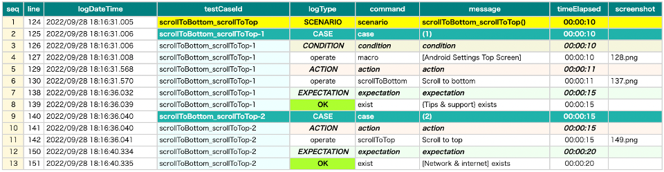
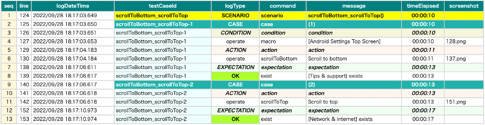

Optimizing end of scroll
When calling commands with scroll (e.g. scrollToEnd, selectWithScrollDown, canSelectWithScrollDown), Shirates detects end of scroll automatically. Moreover, giving additional information may improve the execution time.
end-elements
You can specify the element(s) at the end of scroll in the screen nickname file.
Scrolling commands use these additional information to detect the end of scroll.
[Android Settings Top Screen].json
...
"[Tips & support]": "",
"{Tips & support}": "[Tips & support]:label",
"[Tips & support Icon]": "[Tips & support]:leftImage"
},
"scroll": {
"start-elements": "",
"end-elements": "[Tips & support]"
}
}
Note: Multiple nicknames can be specified using comma.
"end-elements": "[Tips & support],[About phone]"
ScrollToEdge1.kt
(kotlin/tutorial/inaction/ScrollToEdge1.kt)
@Order(10)
@Test
fun scrollToBottom_scrollToTop() {
scenario {
case(1) {
condition {
it.macro("[Android Settings Top Screen]")
}.action {
it.scrollToBottom()
}.expectation {
it.exist("{Tips & support}")
}
}
case(2) {
action {
it.scrollToTop()
}.expectation {
it.exist("[Network & internet]")
}
}
}
}
Comparison
end-elements unspecified

end-elements specified

- unspecified: 20 sec
- specified: 17 sec